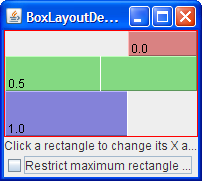
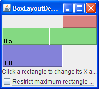
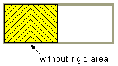
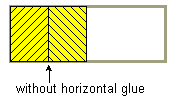
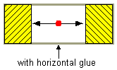
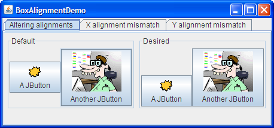
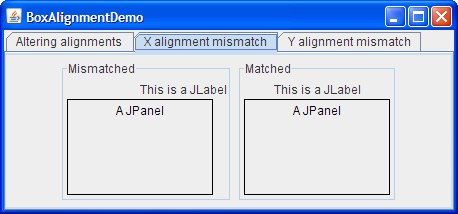

How to Use BoxLayout
Note: This lesson covers writing layout code by hand, which can be challenging. If you are not interested in learning all the details of layout management, you might prefer to use the
GroupLayout layout manager combined with a builder tool to lay out your GUI. One such builder tool is the
NetBeans IDE. Otherwise, if you want to code by hand and do not want to use GroupLayout, then GridBagLayout is recommended as the next most flexible and powerful layout manager.
BoxLayout. BoxLayout
either stacks its components
on top of each other
or places them in a row —
your choice.
You might think of it as a version of
FlowLayout, but with greater functionality.
Here is a picture of an application
that demonstrates using BoxLayout
to display a centered column of components:

You can see the code in
BoxLayoutDemo.java.
The following figure shows a GUI
that uses two instances of BoxLayout.
In the top part of the GUI,
a top-to-bottom box layout
places a label above a scroll pane.
In the bottom part of the GUI,
a left-to-right box layout
places two buttons next to each other.
A BorderLayout
combines the two parts of the GUI
and ensures that any excess space
is given to the scroll pane.
The following code,
taken from
ListDialog.javaJDialog subclass.
The bold lines of code
set up the box layouts
and add components to them.
JScrollPane listScroller = new JScrollPane(list); listScroller.setPreferredSize(new Dimension(250, 80)); listScroller.setAlignmentX(LEFT_ALIGNMENT); ... //Lay out the label and scroll pane from top to bottom. JPanel listPane = new JPanel(); listPane.setLayout(new BoxLayout(listPane, BoxLayout.PAGE_AXIS)); JLabel label = new JLabel(labelText); ... listPane.add(label); listPane.add(Box.createRigidArea(new Dimension(0,5))); listPane.add(listScroller); listPane.setBorder(BorderFactory.createEmptyBorder(10,10,10,10)); //Lay out the buttons from left to right. JPanel buttonPane = new JPanel(); buttonPane.setLayout(new BoxLayout(buttonPane, BoxLayout.LINE_AXIS)); buttonPane.setBorder(BorderFactory.createEmptyBorder(0, 10, 10, 10)); buttonPane.add(Box.createHorizontalGlue()); buttonPane.add(cancelButton); buttonPane.add(Box.createRigidArea(new Dimension(10, 0))); buttonPane.add(setButton); //Put everything together, using the content pane's BorderLayout. Container contentPane = getContentPane(); contentPane.add(listPane, BorderLayout.CENTER); contentPane.add(buttonPane, BorderLayout.PAGE_END);
The first bold line creates a top-to-bottom box layout
and sets it up as the layout manager for listPane.
The two arguments to the BoxLayout constructor
are the container that it manages
and the axis along which the components will be laid out. The PAGE_AXIS constant specifies that components should be laid out in the direction that lines flow across a page as determined by the target container's ComponentOrientation property. The LINE_AXIS constant specifies that components should be laid out in the direction of a line of text as determined by the target container's ComponentOrientation property. These constants allow for internationalization, by laying out components in their container with the correct left-to-right, right-to-left or top-to-bottom orientation for the language being used.
The next three bold lines add the label and scroll pane to the container, separating them with a rigid area — an invisible component used to add space between components. In this case, the rigid area has no width and puts exactly 5 pixels between the label and scroll pane. Rigid areas are discussed later, in Using Invisible Components as Filler.
The next chunk of bold code
creates a left-to-right box layout
and sets it up for the buttonPane container.
Then the code adds two buttons to the container,
using a rigid area to put 10 pixels
between the buttons.
To place the buttons at the right side of their container,
the first component added to the container is glue.
This glue is an invisible component
that grows as necessary to absorb any extra space in its container.
Glue is discussed in
Using Invisible Components as Filler.
As an alternative to using invisible components, you can sometimes use empty borders to create space around components, most particularly panels. For example, the preceding code snippet uses empty borders to put 10 pixels between all sides of the dialog and its contents, and between the two parts of the contents. Borders are completely independent of layout managers. They are simply how Swing components draw their edges and provide padding between the content of the component and the edge. See How to Use Borders for more information.
The following sections discuss BoxLayout
in more detail:
- Box layout features
- Using invisible components as filler
- Fixing alignment problems
- Specifying component sizes
- The box layout API
- Examples that use box layouts
BoxLayout discussion
scare you!
You can probably use BoxLayout
with the information you already have.
If you run into trouble or you want to take advantage of
BoxLayout's power,
read on.
Box Layout Features
As said before,BoxLayout arranges components either
on top of each other
or in a row.
As the box layout arranges components,
it takes the components'
alignments and minimum, preferred, and maximum sizes into account.
In this section, we will talk about top-to-bottom layout.
The same concepts apply to left-to-right or right-to-left layout.
You simply substitute X for Y,
height for width, and so on.
Version note: Before JDK version 1.4, no constants existed for specifying the box layout's axis in a localizable way. Instead, you specified
X_AXIS
(left to right)
or Y_AXIS
(top to bottom)
when creating the BoxLayout.
Our examples now use the constants
LINE_AXIS and PAGE_AXIS,
which are preferred
because they enable programs to adjust
to languages that have different orientations.
In the default, left-to-right orientation,
LINE_AXIS specifies left-to-right layout
and PAGE_AXIS specifies top-to-bottom layout.
When a BoxLayout lays out components
from top to bottom,
it tries to size each component at the component's preferred height.
If the vertical space of the layout does not match the sum of the preferred heights, then BoxLayout tries to resize the components to fill the space. The components either grow or shrink to fill the space, with BoxLayout honoring the minimum and maximum sizes of each of the components. Any extra space appears at the bottom of the container.
For a top-to-bottom box layout, the preferred width of the container is that of the maximum preferred width of the children. If the container is forced to be wider than that, BoxLayout attempts to size the width of each component to that of the container's width (minus insets). If the maximum size of a component is smaller than the width of the container, then X alignment comes into play.
The X alignments affect not only the components' positions relative to each other, but also the location of the components (as a group) within their container. The following figures illustrate alignment of components that have restricted maximum widths.


In the first figure, all three components have an X alignment
of 0.0 (Component.LEFT_ALIGNMENT).
This means that the components' left sides
should be aligned.
Furthermore, it means that all three components are positioned
as far left in their container as possible.
In the second figure,
all three components have an X alignment
of 0.5 (Component.CENTER_ALIGNMENT).
This means that the components' centers
should be aligned,
and that the components should be positioned
in the horizontal center of their container.
In the third figure,
the components have an X alignment
of 1.0 (Component.RIGHT_ALIGNMENT).
You can guess what that means for the components'
alignment and position relative to their container.
You might be wondering what happens when the components have both restricted maximum sizes and different X alignments. The next figure shows an example of this:
As you can see, the left side of the component
with an X alignment of 0.0
(Component.LEFT_ALIGNMENT)
is aligned with the center of the component
that has the 0.5 X alignment
(Component.CENTER_ALIGNMENT),
which is aligned with
the right side of the component
that has an X alignment of 1.0
(Component.RIGHT_ALIGNMENT).
Mixed alignments like this are further discussed in
Fixing Alignment Problems.
What if none of the components has a maximum width? In this case, if all the components have identical X alignment, then all components are made as wide as their container. If the X alignments are different, then any component with an X alignment of 0.0 (left) or 1.0 (right) will be smaller. All components with an intermediate X alignment (such as center) will be as wide as their container. Here are two examples:
 

BoxLayout better,
you can run your own experiments with BoxLayoutDemo2.
Try this:
- Click the Launch button to run BoxLayoutDemo2 using
Java™ Web Start (download JDK 6).
Alternatively, to compile and run the example yourself,
consult the
example index.

You can see the code in
BoxLayoutDemo2.java.
You will see a window like the one above that contains three rectangles. Each rectangle is an instance ofBLDComponent, which is aJComponentsubclass. - Click inside one of the rectangles.
This is how you change the rectangle's X alignment. - Click the check box at the bottom of the window.
This turns off restricted sizing for all the rectangles. - Make the window taller.
This makes the rectangles' container larger than the sum of the rectangles' preferred sizes. The container is aJPanelthat has a red outline, so that you can tell where the container's edges are.
Using Invisible Components as Filler
Each component controlled by a box layout butts up against its neighboring components. If you want to have space between components, you can either add an empty border to one or both components, or insert invisible components to provide the space. You can create invisible components with the help of theBox class.
The
Box class defines a nested class,
Box.Filler, that is a transparent component that paints nothing, and is used to provide space between other components. However, Filler is not actually invisible, because setVisible(false) is not invoked.
The Box class
provides convenience methods
to help you create common kinds of filler.
The following table gives details about
creating invisible components with Box and
Box.Filler.
| Type | Size Constraints | How to Create |
|---|---|---|
| rigid area |
|
Box.createRigidArea(size) |
| glue, horizontal |
|
Box.createHorizontalGlue() |
| glue, vertical |
|
Box.createVerticalGlue() |
custom Box.Filler |
(as specified) | new Box.Filler(minSize,
prefSize, maxSize) |
Here is how you generally use each type of filler:
- Rigid area
- Use this when you want a fixed-size space between two components.
For example, to put 5 pixels between two components
in a left-to-right box,
you can use this code:
container.add(firstComponent); container.add(Box.createRigidArea(new Dimension(5,0))); container.add(secondComponent);


Note: The
Boxclass provides another kind of filler for putting fixed space between components: a vertical or horizontal strut. Unfortunately, struts have unlimited maximum heights or widths (for horizontal and vertical struts, respectively). This means that if you use a horizontal box within a vertical box, for example, the horizontal box can sometimes become too tall. For this reason, we recommend that you use rigid areas instead of struts.
- Glue
- Use this to specify where excess space in a layout
should go.
Think of it as a kind of elastic glue —
stretchy and expandable, yet taking up no space
unless you pull apart the components that it is sticking to.
For example, by putting horizontal glue
between two components in a left-to-right box,
you make any extra space go between those components,
instead of to the right of all the components.
Here is an example of making the space in a left-to-right box
go between two components,
instead of to the right of the components:
container.add(firstComponent); container.add(Box.createHorizontalGlue()); container.add(secondComponent);

- Custom
Box.Filler - Use this to specify a component
with whatever minimum, preferred, and maximum
sizes you want. For example,
to create some filler in a left-to-right layout that puts
at least 5 pixels between two components
and ensures that the container has a minimum height of 100 pixels,
you could use this code:
container.add(firstComponent); Dimension minSize = new Dimension(5, 100); Dimension prefSize = new Dimension(5, 100); Dimension maxSize = new Dimension(Short.MAX_VALUE, 100); container.add(new Box.Filler(minSize, prefSize, maxSize)); container.add(secondComponent);


Fixing Alignment Problems
Two types of alignment problems sometimes occur withBoxLayout:
- A group of components all have the same alignment,
but you want to change their alignment
to make them look better.
For example, instead of having the centers of
a group of left-to-right buttons all in a line,
you might want the bottoms of the buttons to be aligned.
Here is an example:

- Two or more components controlled
by a
BoxLayouthave different default alignments, which causes them to be mis-aligned. For example, as the following shows, if a label and a panel are in a top-to-bottom box layout, the label's left edge is, by default, aligned with the center of the panel.
In general, all the components
controlled by a top-to-bottom BoxLayout object
should have the same X alignment.
Similarly,
all the components controlled by a left-to-right Boxlayout
should generally have the same Y alignment.
You can set a JComponent's X alignment
by invoking its setAlignmentX method.
An alternative available to all components is to override the
getAlignmentX method
in a custom subclass of the component class.
Similarly, you set the Y alignment of a component
by invoking the setAlignmentY method
or by overriding getAlignmentY.
Here is an example, taken from an application called
BoxAlignmentDemo,
of changing the Y alignments of two buttons
so that the bottoms of the buttons are aligned:
button1.setAlignmentY(Component.BOTTOM_ALIGNMENT); button2.setAlignmentY(Component.BOTTOM_ALIGNMENT);
Click the Launch button to run BoxAlignmentDemo using Java™ Web Start (download JDK 6). Alternatively, to compile and run the example yourself, consult the example index.
By default, most components have center X and Y alignment.
However, buttons, combo boxes, labels, and menu items
have a different default X alignment value:
LEFT_ALIGNMENT.
The previous picture shows what happens
if you put a left-aligned component such as a label
together with a center-aligned component
in a container controlled by a top-to-bottom BoxLayout.
The BoxAlignmentDemo
program gives examples of fixing mismatched alignment problems.
Usually, it is as simple
as making an offending button or label
be center aligned.
For example:
label.setAlignmentX(Component.CENTER_ALIGNMENT);
Specifying Component Sizes
As mentioned before,
BoxLayout pays attention
to a component's requested minimum, preferred, and maximum sizes.
While you are fine-tuning the layout,
you might need to adjust these sizes.
Sometimes the need to adjust the size is obvious. For example, a button's maximum size is generally the same as its preferred size. If you want the button to be drawn wider when additional space is available, then you need to change its maximum size.
Sometimes, however, the need to adjust size is not so obvious. You might be getting unexpected results with a box layout, and you might not know why. In this case, it is usually best to treat the problem as an alignment problem first. If adjusting the alignments does not help, then you might have a size problem. We'll discuss this further a bit later.
Note: Although
BoxLayout pays attention to
a component's maximum size,
many layout managers do not.
For example, if you put a button
in the bottom part of a BorderLayout,
the button will probably be wider than its preferred width,
no matter what the button's maximum size is.
BoxLayout, on the other hand,
never makes a button wider than its maximum size.
You can change the minimum, preferred, and maximum sizes in two ways:
- By invoking the appropriate
setXxxSizemethod (which is defined by theJComponentclass). For example:comp.setMinimumSize(new Dimension(50, 25)); comp.setPreferredSize(new Dimension(50, 25)); comp.setMaximumSize(new Dimension(Short.MAX_VALUE, Short.MAX_VALUE)); - By overriding the appropriate
getXxxSizemethod. For example:...//in a subclass of a component class: public Dimension getMaximumSize() { size = getPreferredSize(); size.width = Short.MAX_VALUE; return size; }
If you are running into trouble with a box layout and you have ruled out alignment problems, then the trouble might well be size-related. For example, if the container controlled by the box layout is taking up too much space, then one or more of the components in the container probably needs to have its maximum size restricted.
You can use two techniques to track down size trouble in a box layout:
- Add a garish line border
to the outside of the Swing components in question.
This lets you see what size they really are.
For example:
comp.setBorder(BorderFactory.createCompoundBorder( BorderFactory.createLineBorder(Color.red), comp.getBorder())); - Use
System.out.printlnto print the components' minimum, preferred, and maximum sizes, and perhaps their bounds.
The Box Layout API
The following tables list the commonly used
BoxLayout and
Box constructors and methods.
The API for using box layouts falls into these categories:
| Constructor or Method | Purpose |
|---|---|
BoxLayout(Container, int) |
Creates a BoxLayout instance
that controls the specified Container.
The integer argument specifies the axis
along which the container's components
should be laid out.
When the container has the default component orientation,
BoxLayout.LINE_AXIS
specifies that the components be laid out
from left to right,
and BoxLayout.PAGE_AXIS
specifies that the components be laid out
from top to bottom.
|
Box(int) |
Creates a Box — a container
that uses a BoxLayout
with the specified axis.
As of release 1.3,
Box extends JComponent.
Before that,
it was implemented as a subclass of Container.
|
static Box createHorizontalBox()
(in Box) |
Creates a Box that lays out its components
from left to right. |
static Box createVerticalBox()
(in Box) |
Creates a Box that lays out its components from top to bottom. |
| Constructor or Method | Purpose |
|---|---|
Component createRigidArea(Dimension) |
Create a rigid component. |
Component createHorizontalGlue()
|
Create a glue component. Horizontal glue and vertical glue can be very useful. |
Component createHorizontalStrut()
|
Create a "strut" component. We recommend using rigid areas instead of struts. |
Box.Filler(Dimension, Dimension,
Dimension) |
Creates a component with the specified
minimum, preferred, and maximum sizes
(with the arguments specified in that order).
See the
custom Box.Filler
discussion,
earlier in this section, for details.
|
| Method | Purpose |
|---|---|
void changeShape(Dimension, Dimension,
Dimension) (in Box.Filler)
|
Change the minimum, preferred, and maximum sizes
of the recipient Box.Filler object.
The layout changes accordingly.
|
Examples that Use Box Layouts
The following table lists some of the many examples that use box layouts.
| Example | Where Described | Notes |
|---|---|---|
| BoxLayoutDemo2 | This page | Uses a box layout to create a centered column of components. |
| BoxAlignmentDemo | This page | Demonstrates how to fix common alignment problems. |
| BoxLayoutDemo | This page | Lets you play with alignments and maximum sizes. |
| ListDialog | This page | A simple yet realistic example of using both a top-to-bottom box layout and a left-to-right one. Uses horizontal glue, rigid areas, and empty borders. Also sets the X alignment of a component. |
| InternalFrameEventDemo | How to Write an Internal Frame Listener | Uses a top-to-bottom layout to center buttons and a scroll pane in an internal frame. |
| MenuGlueDemo | Customizing Menu Layout | Shows how to right-align a menu in the menu bar, using a glue component. |
| MenuLayoutDemo | Customizing Menu Layout | Shows how to customize menu layout by changing the menu bar to use a top-to-bottom box layout, and the popup menu to use a left-to-right box layout. |
ConversionPanel.java in the
Converter demo
|
How to Use Panels | Aligns two components in different box-layout-controlled containers by setting the components' widths to be the same, and their containers' widths to be the same. |